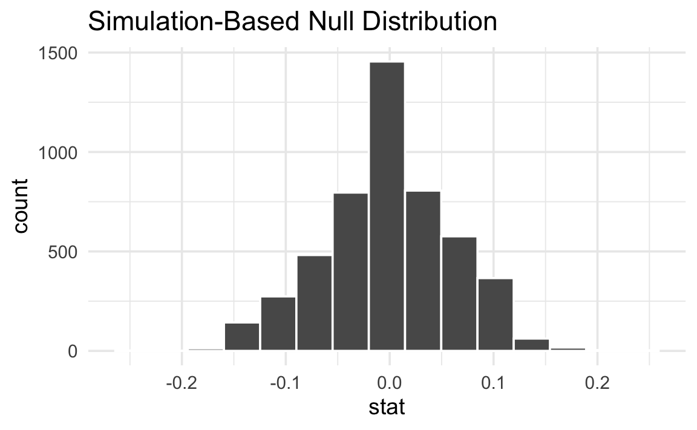
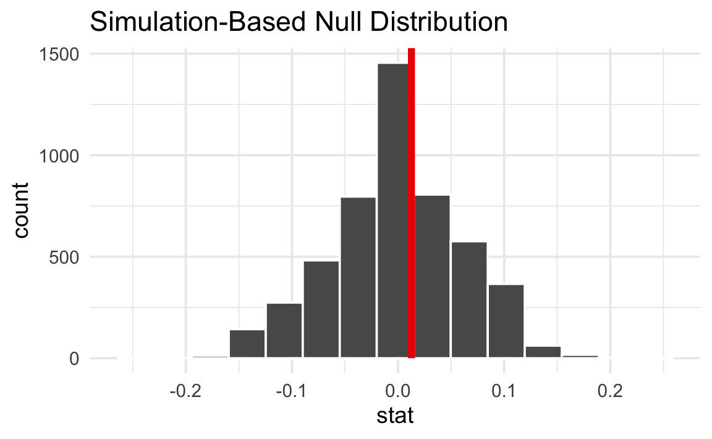
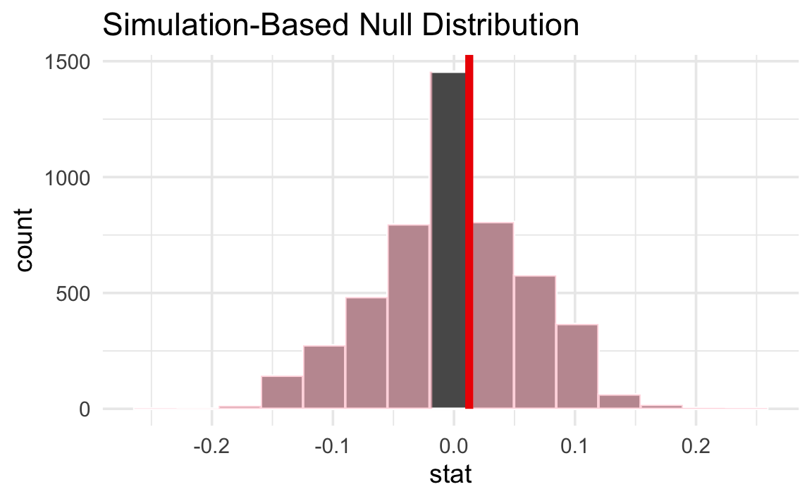

jstat = require("jstat@1.9.6")
clrs = ({
gold: "#f3d567",
orange: "#ee9b43",
coral: "#e74b47",
crimson: "#b80422",
navy: "#172767",
teal: "#19798b",
gray: "#4d4d4d"
})
function fmt_pp(x) {
return (x * 100).toFixed(1) + " pp.";
}
function fmt_pp0(x) {
return Math.round(x * 100) + " pp.";
}
function fmt_pct(x) {
return (x * 100).toFixed(1) + "%";
}
function statLabel(value, textFn, dy, nullValues) {
const extent = d3.extent([...nullValues, value]);
const range = extent[1] - extent[0];
const pos = range === 0 ? 0.5 :
(value - extent[0]) / range;
const textAnchor = pos > 0.82 ? "end" :
pos < 0.18 ? "start" : "middle";
const dx = textAnchor === "end" ? -10 :
textAnchor === "start" ? 10 : 0;
const common = {
x: d => d, frameAnchor: "top", dy, dx,
text: textFn,
fontWeight: "bold", fontSize: 14,
textAnchor, paintOrder: "stroke"
};
return [
Plot.text([value], {
...common,
stroke: "white", strokeWidth: 4, fill: "black"
})
];
}Difference in proportions
Difference in proportions
◎◉○
Live simulation
The sample statistic (δ) is the difference in proportions of how many people responded “Agree” between the two groups.
The difference in proportions is
We create a null distribution by shuffling (or “permuting” to use the official stats term) the group labels. This simulates a world where all the real, measured responses are still the same, but where group assignment doesn’t matter. This eliminates all differences between the groups.
Think of this as being a world where there are no differences between the two groups. Importantly, this doesn’t mean that the measured difference between the groups is exactly 0. There is variation in the data, and that variation is reflected in the null world. What it means is that in the null world, the difference between the two groups is 0 ± some amount.
Here’s what one shuffle looks like. Notice that the responses stay the same—only the group labels get reassigned:
Original data
Shuffled data
When we do this shuffle hundreds of times and compute the difference in proportions each time, we get a null distribution—a picture of what differences look like in a world where groups don’t matter.
Here’s what this null world looks like:
Next we put δ inside that null world and see how comfortably it fits there.
Is it surprising to see the red line in this null world? Is the line way out to one of the sides, or is it near the middle with the rest of the null world?
We can actually quantify the probability of seeing that red line in a null world. This is a p-value—the probability of seeing a δ at least that extreme in a world where there’s no difference between the group proportions.
The p-value is
Finally, we have to decide if the p-value meets an evidentiary standard or threshold that would provide us with enough evidence that we aren’t in the null world (or, in more statsy terms, enough evidence to reject the null hypothesis).
There are lots of possible thresholds. By convention, most people use a threshold (often shortened to α) of 0.05, or 5%. But that’s not required! You could have a lower standard with an α of 0.1 (10%), or a higher standard with an α of 0.01 (1%).
Evidentiary standards
When thinking about p-values and thresholds, I like to imagine myself as a judge or a member of a jury. Many legal systems around the world have formal evidentiary thresholds or standards of proof. If prosecutors provide evidence that meets a threshold (i.e. goes beyond a reasonable doubt, or shows evidence on a balance of probabilities), the judge or jury can rule guilty. If there’s not enough evidence to clear the standard or threshold, the judge or jury has to rule not guilty.
With p-values:
- If the probability of seeing an effect or difference (or δ) in a null world is less than 5% (or whatever the threshold is), we rule it statistically significant and say that the difference does not fit in that world. We’re pretty confident that it’s not zero.
- If the p-value is larger than the threshold, we do not have enough evidence to claim that δ doesn’t come from a world of where there’s no difference. We don’t know if it’s not zero.
Importantly, if the difference is not significant, that does not mean that there is no difference. It just means that we can’t detect one if there is. If a prosecutor doesn’t provide sufficient evidence to clear a standard or threshold, it does not mean that the defendant didn’t do whatever they’re charged with†—it means that the judge or jury can’t detect guilt.
NoteDifferent evidentiary standards
Many legal systems have different levels of evidentiary standards:
- Standards of proof in most common law systems (juries):
- Balance of probabilities (civil cases)
- Beyond a reasonable doubt (criminal cases)
- Evidentiary thresholds in the United States (juries):
- Preponderance of the evidence (civil cases)
- Clear and convincing evidence (more important civil cases)
- Beyond a reasonable doubt (criminal cases)
- Standards of proof in China (judges):
- 高度盖然性 [gāo dù gài rán xìng] / highly probable (civil cases)
- 证据确实充分 [zhèng jù què shí chōng fēn] / facts being clear and evidence being sufficient | the evidence is definite and sufficient (criminal cases)
- Levels of doubt in Sharia systems (judges):
- غلبة الظن [ghalabat al-zann] / preponderance of assumption (ta’zir cases and family matters)
- اليقين [yaqin] / certainty (hudud/qisas cases)
- Standard of proof in the International Criminal Court (judges):
- Beyond reasonable doubt (genocide, crimes against humanity, or war crimes)
Penguin sex ratios across species
For this example, we want to know if the proportion of female penguins is the same in Adelie and Gentoo species. Here’s what the sex breakdown looks like:

We can look at this more officially. First, we’ll load some packages:
library(tidyverse)
library(infer)
library(parameters)
penguins <- penguins |> drop_na(sex)The proportions look pretty similar across the two species:
penguins |>
filter(species %in% c("Adelie", "Gentoo")) |>
count(species, sex) |>
group_by(species) |>
mutate(proportion = n / sum(n)) |>
filter(sex == "female")# A tibble: 2 × 4
# Groups: species [2]
species sex n proportion
<fct> <fct> <int> <dbl>
1 Adelie female 73 0.5
2 Gentoo female 58 0.487Is there actually a difference, or is it just noise? We need to do some hypothesis testing.
Null hypothesis inference with {infer}
The sample statistic we’re interested in is the difference in the proportion of female penguins between Adelie and Gentoo species.
delta <- penguins |>
filter(species %in% c("Adelie", "Gentoo")) |>
specify(sex ~ species, success = "female") |>
calculate(stat = "diff in props", order = c("Adelie", "Gentoo"))
deltaResponse: sex (factor)
Explanatory: species (factor)
# A tibble: 1 × 1
stat
<dbl>
1 0.0126The difference in proportions is 0.013 (or 1.3 percentage points).
We create a null distribution by shuffling (or “permuting”) the species labels. This simulates a world where all the observed sexes are still the same, but where species assignment doesn’t matter. This eliminates all differences between the species.
shuffled_data <- penguins |>
filter(species %in% c("Adelie", "Gentoo")) |>
specify(sex ~ species, success = "female") |>
hypothesize(null = "independence") |>
generate(reps = 5000, type = "permute")Next we calculate the difference in proportions in each of these 5,000 shuffled worlds:
null_world <- shuffled_data |>
calculate(stat = "diff in props", order = c("Adelie", "Gentoo"))
null_worldResponse: sex (factor)
Explanatory: species (factor)
Null Hypothesis: independence
# A tibble: 5,000 × 2
replicate stat
<int> <dbl>
1 1 -0.0942
2 2 -0.140
3 3 0.0279
4 4 -0.0484
5 5 -0.0484
6 6 -0.0484
7 7 -0.125
8 8 0.150
9 9 -0.0637
10 10 -0.0789
# ℹ 4,990 more rowsHere’s what this null world looks like:
null_world |>
visualize()
Notice that the differences are centered around 0, reflecting a world where species doesn’t affect the sex ratio.
Next we put δ inside that null world to see how comfortably it fits there.
null_world |>
visualize() +
shade_p_value(obs_stat = delta, direction = NULL)
The observed difference of 0.013 sits right in the middle of the null world. It doesn’t look extreme at all.
We can quantify the probability of seeing that red line in a null world. This is a p-value—the probability of seeing a difference in proportions at least that extreme in a world where the proportions are the same.
null_world |>
visualize() +
shade_p_value(obs_stat = delta, direction = "two-sided")
p_value <- null_world |>
get_p_value(obs_stat = delta, direction = "two-sided")
p_value# A tibble: 1 × 1
p_value
<dbl>
1 0.928The p-value is 0.928. This means that in a world where there is no difference in sex ratios between the species, there is a 92.84% chance of seeing a difference in proportions at least as extreme as 0.013.
Finally, we have to decide if the p-value meets an evidentiary standard or threshold that would provide us with enough evidence that we aren’t in the null world (or, in more statsy terms, enough evidence to reject the null hypothesis).
Using an α of 0.05, the p-value is 0.928, which is greater than 0.05. We don’t have enough evidence to say that there’s a difference in sex ratios between Adelie and Gentoo penguins. The difference is not statistically significant.
This does not mean the proportions are identical—we just can’t distinguish the difference from random noise with this sample.
null_world |>
visualize() +
shade_p_value(obs_stat = delta, direction = "two-sided")
Null hypothesis inference with prop.test()
In practice, most people do not simulate null worlds. Instead, they use a proportion test (prop.test()), which approximates the null world mathematically using a χ² distribution. The intuition is the same: a p-value is still the probability of seeing a difference at least that extreme in a world where the proportions are equal.
tab <- penguins |>
filter(species %in% c("Adelie", "Gentoo")) |>
mutate(species = fct_drop(species)) |>
count(species, sex) |>
pivot_wider(names_from = sex, values_from = n) |>
column_to_rownames("species") |>
as.matrix()
prop.test(tab)
2-sample test for equality of proportions with continuity correction
data: tab
X-squared = 0.0065013, df = 1, p-value = 0.9357
alternative hypothesis: two.sided
95 percent confidence interval:
-0.1160296 0.1412397
sample estimates:
prop 1 prop 2
0.500000 0.487395 Buried in that output is the p-value: 0.936. That’s huge. In a world where the two species have the same sex ratios, there’s a 93.57% probability of seeing a difference in proportions of 1.3 percentage points. We don’t have enough evidence to declare that there’s a difference between the two species. That doesn’t necessarily mean that there’s no difference. It means that if there really were a difference, we wouldn’t be able to detect it.
If you don’t like all that text output, you can feed the results of prop.test() to the model_parameters() function from the {parameters} package:
prop.test(tab) |>
model_parameters() |>
display(caption = "")| Proportion | Difference | 95% CI | Chi2(1) | p |
|---|---|---|---|---|
| Alternative hypothesis: two.sided | ||||
| 50.00% / 48.74% | 1.26% | (-0.12, 0.14) | 6.50e-03 | 0.936 |
Footnotes
Kind of—in common law systems, defendants are presumed innocent until proven guilty, so if there’s not enough evidence to prove guilt, they are innocent by definition. ↩︎